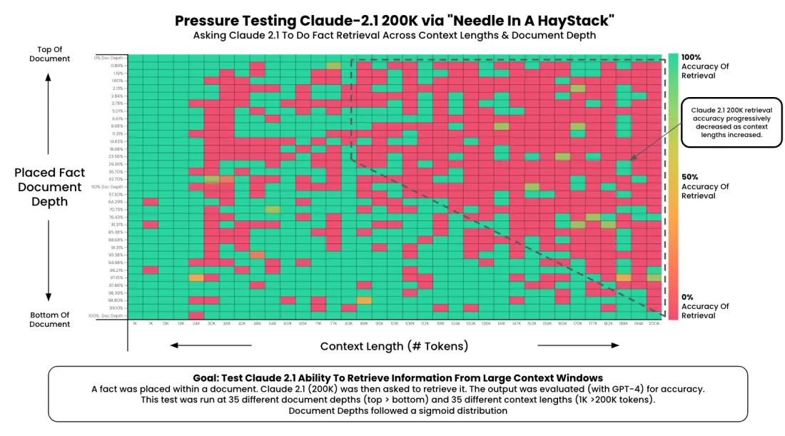

A long-context or multimodal score measures whether the model used the context or the image only if the benchmark removes the shortcut that lets it answer without them: a needle that repeats the question's words, or a question the text alone gives away. Each generation of benchmark closed one shortcut and then saturated, so a score is read together with its shortcut control: the length bin and threshold, or the same model's blind score.
The question repeats the needle's words: finding it is a string match.
near perfect by 2024
13 tasks; effective length = above 85.6%.
GPT-4: claims 128K, effective 64K
No shared words; the link is world knowledge.
GPT-4o 99.3% 69.7% at 32K
2 to 8 identical requests: pick the right one by order.
at 1M: vendor 96.3%, independent best 63.5%
100 PDFs, 4,592 pages; every criterion must pass.
best 34.2%
College questions with images; many answerable from the text.
GPT-4, text only: 34.9% (random 22.1%)
Balanced yes/no; options rotated.
OpenFlamingo 36.7% 2.6%
Same vision model, image removed.
GPT-4V 53.6%, of which 45.1% blind: the image adds 8.5
Filter text-answerable items, 10 options, screenshot.
GPT-4o 69.1% 54.0% / 49.7%
4 linked questions per video, credit only if consistent.
best 49.4, experts 90.7
Struck-through: the score with the shortcut open; highlighted: with it closed, or (blind baseline) without the image; same model where one is named. Every number is sourced in its section below.
You need: the parent's protocol tuple (version, split, harness, sampling) and contamination (Topic: benchmarks, Reading tab). Effective context as a property of the model, and KV-cache sizing, are on Long context; how a VLM turns images into tokens is on Vision-language models; error bars on Eval statistics. This page is about measuring the result.
What each benchmark is, how it is graded and its state. Status words follow the parent's atlas (saturated: the top sits at the ceiling or inside the answer key's noise; dormant: the maintainer's board has stopped). The best readings, each dated and with who ran it, are in one table in Read a score.
| Benchmark | What, how many | Graded by | State, October 2026 |
|---|---|---|---|
| Needle in a haystack 2023 | One planted sentence in filler text, any length and depth | Answer contains the fact | Retired. No 2026 card reports it |
| RULER 2024 | 13 synthetic tasks, 4K to 128K | Exact strings | Dormant. Regression test in papers |
| NoLiMa 2025 | 58 question-needle pairs with no shared words, 1K to 128K | Answer contains the name | Diagnostic. |
| BABILong, HELMET, Michelangelo, LOFT 2024 | Reasoning over scattered facts; seven application categories; latent-structure queries; whole corpora in context | Exact; model judge; similarity; task metrics | Research suites; MRCR (from Michelangelo) is the one vendors adopted |
| LongBench v2 2024 | 503 multiple-choice questions on 8K to 2M-word contexts | Letter match | Dormant. |
| OpenAI MRCR v2 2025 | 2,400 conversations, 2, 4 or 8 identical requests, 4K to 1M tokens | Similarity ratio, with a hash gate | Saturating in vendor figures only |
| Fiction.LiveBench 2025 | Questions on long stories, 0 to 192K tokens | Exact | Saturated. |
| AA-LCR 2025 | 100 questions over 10K to 100K-token document sets | LLM judge, equivalence | Saturating. |
| GDP.pdf 2026 | 100 tasks over 100 PDFs (4,592 pages), 1,275 criteria | LLM judge per criterion, all must pass | Active. |
| MMMU 2023 | 11.5K college questions with images, 30 subjects | Letter match | Saturated. Test answers public since 12 Feb 2026 |
| MMMU-Pro 2024 | 1,730 MMMU questions, filtered, 10 options, also as screenshots | Letter match | Saturating. |
| POPE, MMBench 2023 | Yes/no object questions; multiple choice with rotated options | Accuracy, F1, yes-rate; CircularEval | Diagnostics for bias |
| MathVista, ChartQA, DocVQA, OCRBench 2020 to 2023 | Visual maths; chart questions; document questions; reading text | Exact; relaxed numeric; ANLS; match | Saturated (OCRBench succeeded by v2) |
| CharXiv, ZeroBench 2024 to 2025 | 2,323 real arXiv charts; 100 adversarially filtered images | Exact; pass^5 | Successors with headroom at launch |
| Video-MME, Video-MMMU 2024 to 2025 | 2,700 questions on 900 videos; 900 on 300 lecture videos | Letter match | Saturating. Boards stopped in 2025 |
| Video-MME-v2 2026 | 800 videos, 4 linked questions each, 8 options | Grouped, non-linear score | Active. |
Long-context tests ask at three levels of difficulty: find one stated fact (needle, single-needle RULER), connect facts that are far apart or only implied (multi-hop tracing, NoLiMa's latent hops, BABILong's chained facts, MRCR's "the second of two identical requests"), and aggregate the whole input (counting the most frequent words, summarising a book, reasoning over 100 PDFs). Three protocol knobs decide what a number means: the length (and whose tokenizer counted it: AA-LCR counts with cl100k_base, MRCR bins by o200k), the depth where the evidence sits, and the threshold that turns a curve into an effective length. Why a model degrades past its training length (RoPE scaling, YaRN) is on Positional Encodings; how long context is trained is on Data mixing, curricula and continued-pretraining ratios.
Greg Kamradt's open-source test (LLMTest_NeedleInAHaystack, November 2023) plants one sentence in a long run of essays and asks for it back, sweeping context length on one axis and needle depth on the other. Its needle and question, as Anthropic later quoted them (Anthropic, 6 Dec 2023):

Two things make it weak. The question repeats the needle's words, so finding it is a string match, the operation attention does best. And it measures the prompt as much as memory: Claude 2.1 scored 27% until Anthropic added "Here is the most relevant sentence in the context:" to the start of the answer, which raised it to 98% (Anthropic); the model had been declining to answer from a sentence that looked out of place, not failing to find it. By 2024 RULER's authors note "nearly perfect accuracy in the vanilla NIAH test" for every model they tested (RULER abstract), and the Llama 3 report claims perfect single-needle retrieval at all depths and lengths (Llama 3 Herd paper page). It is retired as evidence: no 2026 card reports it.
Liu et al. put twenty retrieved Wikipedia passages in the prompt, exactly one with the answer, and moved that passage from first to last (Lost in the Middle, v3). Accuracy traces a U: high when the evidence comes first (primacy) or last (recency), lowest in the middle.
Values from Table 6 (20 documents) and Table 1 (closed-book, oracle) of arXiv 2307.03172v3; positions are the gold passage's index 0, 4, 9, 14, 19 shown 1-based. Lines join measured points only. The closed-book line is the score with no passages.
The effect is not universal: Claude-1.3's curve moves by about 4 points, GPT-3.5-Turbo's by 22. And it changes with the test: once the needle shares no words with the question, length matters more than position, because the model can no longer find the needle wherever it is (Section 4.4.2 of NoLiMa). A benchmark that places evidence only at the edges overstates; a depth chart describes one model family at one length.
NVIDIA's RULER (Hsieh et al., v3, April 2024) kept the needle's convenience (synthetic, any length, exact grading) and widened it to 13 tasks in four categories (retrieval, multi-hop tracing, aggregation, question answering), 500 examples per task and length from 4K to 128K; an answer counts if it contains the target string.
Its lasting contribution is a definition: the effective length is the largest length at which a model's average still beats Llama 2 7B at 4K, 85.6%. Under that rule GPT-4, advertised at 128K, is effective to 64K; of 17 models all claiming 32K or more, the paper says "only half" pass at 32K, and Table 3 gives 10 of 17 derived. Examples from Table 3 (claimed / effective): GPT-4 128K / 64K; Llama 3.1 70B 128K / 64K; Qwen2 72B 128K / 32K; Mistral 7B v0.2 32K / 16K. NoLiMa later used a relative rule: above 85% of the model's own short-context score (BABILong uses the same). Which rule you pick changes the answer, and the chart below lets you see by how much.
All 17 RULER rows (Table 3) and all 22 NoLiMa rows (Tables 3 and 10). RULER's "relative" rule uses each model's 4K score as its base (RULER defines no base; this page's choice). NoLiMa's 64K and 128K columns exist only for GPT-4o, GPT-4.1 and Gemini 2.0 Flash and use 11 placements instead of 26. Effective lengths are computed in the page from the published per-length scores and checked against recompute.py: every one of RULER's 17 reproduces; "≥" marks a model that clears the threshold at the longest length tested.
The weakness is the threshold. An absolute 85.6% is a property of a 2023 model: a model that starts at 99% and falls to 86% passes, one that starts at 88% and stays flat looks almost as good. A relative rule rewards the reverse. RULER also kept literal matching in its retrieval tasks. Its board stopped at 128K in October 2025 (README); with frontier windows at a million tokens, vendors moved to MRCR, and RULER survives in papers as a quick regression test (the Qwen3 report and Latent Context Language Models use it).
Modarressi et al. measured how many of a question's words appear in the passage that answers it (ROUGE precision): 0.905 for vanilla NIAH, 0.571 for RULER's single-needle task, 0.966 for InfiniteBench's QA (NoLiMa, v3, ICML 2025). Then they built needles whose link to the question is world knowledge: the needle says a character lives next to the Semper Opera House; the question asks who has been to Dresden. Two-hop versions ask about Saxony, the state Dresden is in.
Predict, then try: Direct, then One-hop, then Two-hop, stepping with the controls. Same model (Llama 3.3 70B), same needle, same haystacks; only the question changes. Tick "answer options" to put four candidate names in the question, which restores a literal match without changing the reasoning.
Scores: NoLiMa v3 Table 6 (Llama 3.3 70B at 8K, 16K, 32K; the multiple-choice rows put three haystack characters and the answer in the question). The Direct question is worded here from the paper's definition; the one-hop and two-hop questions are quoted. "Content words shared" is this page's count (question words minus a fixed list of function words, found in the needle), not the paper's ROUGE; both are in recompute.py.
The headline: of 13 models claiming at least 128K, 11 score at 32K less than half their own short-context base; GPT-4o, the strongest, goes from 99.3% to 69.7% (Table 3). Under NoLiMa's rule GPT-4o is effective to 8K and most others to 2K or less; Table 10 adds GPT-4.1: claimed 1M, effective 16K, 64.7% at 128K. Literal matches also hurt when they point the wrong way: one distractor sentence that shares the question's words cuts GPT-4o's effective length to 1K. Reasoning models do better without escaping it: on NoLiMa-Hard (the 10 hardest pairs) o3 holds 58.5% at 32K from a base of 100%, Gemini 2.5 Pro 58.6% from 99.1%, o1 31.1% (NoLiMa README, update of 17 Jul 2025).
Five research suites push past "find the sentence", each in a different direction; what each found is the reason to know it.
| Suite | Level | How it is built and graded | What it found |
|---|---|---|---|
| BABILong (Kuratov et al.) | connect | The 20 bAbI reasoning tasks (fact chaining, induction, deduction, counting, lists) with facts scattered through PG-19 book text, splits up to 10M tokens; effective length = 85% of the 0K score | Popular models "effectively utilize only 10-20% of the context"; RAG reaches about 60% on single-fact questions regardless of length; fine-tuned recurrent memory transformers process up to 50M tokens |
| Michelangelo (Google DeepMind, arXiv 2409.12640) | connect | Latent Structure Queries: the context hides a structure the model must "chisel away" the rest to see. Three tasks: Latent List (a list built by Python operations), MRCR (multi-round co-reference), IDK (unanswerable questions) | On MRCR every frontier model fell off before 32K; after that drop Gemini stayed flat to 1M while GPT and Claude kept falling at 128K. MRCR became the industry's long-context number |
| HELMET (Princeton, arXiv 2410.02694) | all three | Seven application categories (RAG, generation with citations, re-ranking, many-shot in-context learning, long-document QA, summarisation, synthetic recall) to 128K, model-based grading where ROUGE fails | From 59 models: synthetic tasks like NIAH "do not reliably predict downstream performance"; categories correlate weakly; the open-closed gap widens with length |
| LOFT (Google DeepMind, Lee et al., arXiv 2406.13121) | find, aggregate | 35 datasets in 6 task types (text, visual and audio retrieval, RAG, SQL-like reasoning, many-shot ICL) at 32K, 128K and 1M; the whole corpus goes in the prompt with an ID per item, the query last (corpus-in-context prompting) | At 128K Gemini 1.5 Pro matches specialised retrievers (text retrieval 0.77 against Gecko's 0.76; RAG 0.53 against 0.52) but not SQL (0.38 against DAIL-SQL's 0.65): long context replaces lookup, not composition (Table 2) |
| LongBench v2 (Tsinghua, arXiv 2412.15204) | connect | 503 hard multiple-choice questions by nearly 100 professionals over 8K to 2M words (single and multi-document QA, long ICL, dialogue history, code repositories, structured data) | Experts under a 15-minute limit score 53.7%; at launch the best direct answer was 50.1% and o1-preview 57.7%. No 2026 model has been added to the board |
OpenAI MRCR is the open version OpenAI released with GPT-4.1 in April 2025 (dataset card, MIT licence). A synthetic conversation asks for dozens of short pieces of writing ("write a poem about tapirs", "write a blog post about rocks"); hidden among them are 2, 4 or 8 identical requests, and the last turn asks the model to prepend a random string to, say, the 2nd poem about tapirs. Every reply was written by GPT-4o, so the needles look exactly like the hay. 2,400 rows: three needle counts, eight length bins from 4K to 1M tokens, 100 per bin. The literal match is total (the needles repeat the request word for word), so the difficulty is identity and order, not finding. Here is a real row and the real grader:
Row 170 of openai/mrcr (2needle/2needle_0.parquet, the shortest 2-needle row in that file): 16,317 tokens of prompt plus answer (o200k, counted here), so it sits in the 8K to 16K bin; longer rows add more requests, not a different task. Each block is one message, width proportional to its length; click one to see it.
Both needles repeat "write a short scene in a play about blueberries"; the task is telling the 1st from the 2nd and copying the right one exactly, with the random string in front.
difflib.SequenceMatcher finds between reply and target, prefix removed: the longest common substring, then recursively the pieces to its left and rightPredict, then try: what does the wrong needle score? Pick the presets, then edit the reply: delete a line, change a name, drop the prefix's last character.
check_seqmatch.py, recompute.py).date_added field (changelog). Scores from before and after are not comparable; "MRCR" in a vendor table can also mean Google's original Michelangelo version; and 2, 4 and 8 needles and each length bin are different numbers, so a vendor's best bin is not a model's 1M score.The readings show the gap that matters most in this family: OpenAI reports GPT-6 Astra at 96.3% on 8 needles at 512K to 1M; the best independent run of the same set at 1M is 63.5% (Context Arena). Saturated in the vendor's own number, not yet independently (both dated in the readings table).
Fiction.LiveBench asks comprehension questions about private long stories at fixed lengths from 0 to 192K tokens (Fiction.live). The short columns went first (GPT-5 medium 97.2% at 16K at its August 2025 release, via the Epoch AI hub), then the long ones; its last table (4 April 2026, table image) had a model at 100.0% at 192K, and it stopped.
AA-LCR (Artificial Analysis Long Context Reasoning, v1.1) is 100 questions over document sets of 10K to 100K tokens (company filings, consultations, legal and academic texts) that need reasoning across several documents; an LLM judges each answer equivalent or not. Mid-2024 frontier models were below 50%. With 100 questions the 95% half-width at the top is about ±6.2 points derived, so the top dozen are statistically one group.
GDP.pdf is long-context and multimodal at once: 100 professional tasks over 100 PDFs, 4,592 pages of tables, charts and scans, with 1,275 expert-written criteria; a task passes only if every criterion passes (Garre et al., arXiv 2607.11192; Surge AI launch post). Items were kept only if at least two frontier models failed them, and the data are public. The two harnesses that run it do not agree for the same model (Surge's and Artificial Analysis's five-attempt implementation); the 33.2% often quoted is Artificial Analysis's figure from the Index v4.2 launch on 4 September, before v4.3 changed image handling. Grading by LLM judge is taught on Topic: evaluation-and-llm-judges.
A multimodal question tests seeing only if the answer depends on what is seen. Three things make this family saturate faster and mislead more often than text benchmarks: blind answerability (the text and options give the answer away, or the item was memorised: read a score against the same model with the image removed); short answers (one word or number, quick to grade and quick to overfit: human ceilings fall within two or three years); and the input pipeline is part of the score (image resolution, frames sampled, subtitles or audio are harness choices; for video the frame budget differs by API, Gemini at 1 frame per second, GPT-6 Astra 800 frames, Claude Opus 5.5 600, per Google's Gemini 4 Argon evaluation notes, so a cross-vendor video table compares pipelines as much as models).
MMMU (Yue et al., v4, November 2023): 11.5K questions from college exams, quizzes and textbooks, 30 subjects, 183 subfields, 30 image types (charts, diagrams, maps, music sheets, chemical structures). At launch GPT-4V scored 56.8% on validation; random choice 22.1%, the most frequent option 26.8%, and GPT-4 given only the text 34.9%. That last number is the problem. The MMStar authors ran models with no image on six multimodal benchmarks (Chen et al., arXiv 2403.20330): Gemini Pro scored 42.9% on MMMU blind, more than 20% of MMMU questions could be solved by most language models directly, and multimodal training leaks items: Sphinx-X-MoE answered 43.6% with the image removed, 17.9 points above its own language backbone. Their fix, MMStar, is 1,500 human-checked samples that need the image.
MMMU-Pro (Yue et al., v3, September 2024) applied three fixes in order: filter (drop questions that text-only models answer), augment to ten options (random choice falls from about 25% to 12.8%; 1,730 questions remain), and vision-only (question and options arrive as one screenshot). The score is the mean of the 10-option and vision-only settings.
Predict, then try: how much of GPT-4V's score survives with no image? Step through "MMMU, blind test", then switch to "MMMU-Pro, the fix" and step through the three changes for GPT-4o, then for a weaker open model (LLaVA-OneVision-72B loses 14 points to the screenshot alone).
Blind test: MMStar Table 3, MMMU validation column, 0-shot (the language model is the vision model's own base: GPT-4 Turbo for GPT-4V, Gemini Pro for Gemini Pro Vision). MMMU-Pro: Table 1 of arXiv 2409.02813v3 (each setting the better of direct and chain-of-thought prompting). The two halves come from different papers and are not one series.
GPT-4V reached 45.1% on MMMU validation with its image removed and 53.6% with it: the picture was worth 8.5 points, and 73% of its margin over random choice was there without it derived. On MMMU-Pro, GPT-4o went from 69.1% (MMMU validation) to 54.0% with ten options and 49.7% from screenshots; every model in the paper lost 13 to 27 points overall, and the printed differences all reproduce from the settings (recompute.py). Both have since saturated (readings in the table); MMMU's validation answers were always public and the team released the test answers on 12 February 2026, so later test-set scores can be trained on (MMMU leaderboard). Validation and test are different numbers: the test top was 65.9% before its answers were released.
MMMU splits: 150 development questions (5 per subject), 900 validation, 10.5K test with hidden answers. 90 senior students, three per subject, set the human reference on validation: 76.2% (worst), 82.6% (median), 88.6% (best).
MMMU-Pro's filter: four text-only models (Llama 3 70B, Qwen2 72B, Yi-1.5 34B, Mixtral 8x22B) each answered every question ten times without the image; a question was dropped if at least three of the four got it right in a majority of tries; 1,800 were sampled from the rest, 60 per subject. Options grew to ten (GPT-4o proposed, Claude 3.5 filtered, two rounds of human review), which also removed 70 incoherent questions. In the vision-only setting each question was photographed or screenshotted with its options.
MMMU-Pro's human figure (85.4% high) is an estimate: MMMU-Pro was never sat by people; the authors re-scored the original MMMU expert answers, guessing among the ten options where an expert wrote no working.
Two more ways to score without looking, each with a benchmark built to expose it. POPE (Li et al. 2023) asks "Is there a <object> in the image?" for present objects and for absent ones drawn at random, from the most frequent objects (popular) or from objects that co-occur with what is there (adversarial), half yes and half no; it reports accuracy, F1 and the yes-rate. MMBench (Liu et al. 2023) attacks guessing and option-letter bias with CircularEval.
Accuracy 50%; precision 0.5, recall 1, so F1 = 2·0.5·1 ⁄ 1.5 = 66.67 derived; yes-rate 100%. Only the yes-rate gives it away. The original LLaVA said yes 95.4 to 99.1% of the time, accuracy 50.8 to 54.4% (POPE Table 3).
Single pass: right whenever the key happens to be A, 25% on a balanced key. CircularEval counts the item only if all four passes are right: 0; a random guesser gets 0.254 = 0.39% derived. OpenFlamingo v2 drops from 36.7% to 2.6% under it.
The always-yes and always-A models are illustrative; the LLaVA and OpenFlamingo figures are published. Arithmetic in recompute.py.
Report the yes-rate beside any yes/no accuracy and the circular score beside any multiple-choice one. How to measure and reduce a VLM's hallucination in practice (and the POPE-style probe run on SmolVLM) is on Vision-language models and Evaluating generative models.
Short answers grade cleanly, so these sets saturate within two or three years, and each successor (CharXiv, ZeroBench, OCRBench v2) is built by filtering for what current models fail: headroom at the cost of a moving, model-defined target.
6,141 examples from 28 existing datasets plus three new ones (IQTest, FunctionQA, PaperQA); most reports use the 1,000-item testmini. At launch GPT-4V scored 49.9% against a human 60.3% (Lu et al.). The board's top is now 25 points above the human reference. Saturated.
9.6K human-written questions and 23.1K generated from chart summaries (Masry et al.); numeric answers accepted within a small relative tolerance ("relaxed accuracy"). Templated charts made it easy to overfit: on CharXiv's stress test, open models that beat proprietary ones on such sets dropped by up to 34.5% when the chart or question changed slightly.
2,323 real charts from arXiv papers, descriptive and reasoning questions, all hand-checked (Wang et al.). At launch GPT-4o scored 47.1% on reasoning questions against 80.5% for humans. 2026 cards moved chart understanding here.
1,000 questions from 29 datasets in five parts: text recognition, scene-text VQA, document VQA, key information extraction, handwritten maths expressions (Liu et al.; repository). Reading text was the weakest skill of early VLMs. OCRBench v2 (31 December 2024): 10,000 human-verified pairs across 31 scenarios.
100 questions adversarially filtered to be "impossible" for frontier models at release: 0% pass@1 and pass^5. After a year of tracking the authors report 6% pass^5 and 19% pass@5 (Roberts et al., v3). pass^5 (all five tries right) is the reliability metric, as on the agentic family.
DocVQA (Mathew et al.): 50,000 questions on 12,000+ document images, graded by ANLS: one minus the edit distance to the closest reference answer divided by the longer string's length, set to zero when that ratio is 0.5 or more, averaged over questions. Humans score 94.36; self-reported model scores of 96.4 exceed it, which means the remaining errors are mostly label noise. Saturated.
| Prediction (reference "Robert Smith", 12 characters) | Edit distance | ÷ longer length | Score |
|---|---|---|---|
| Robert Smith | 0 | 0 | 1 |
| Robert Smyth | 1 | 0.083 | 0.917 |
| Rob Smith | 3 | 0.25 | 0.75 |
| R. Smith | 5 | 0.417 | 0.583 |
| Smith | 7 | 0.583 | 0 (cut-off) |
Illustrative answers; Levenshtein distance on the exact strings, computed in recompute.py.
Video-MME (Fu et al., May 2024): 900 videos (254 hours, 11 seconds to an hour, six domains), 2,700 hand-written four-option questions, scored with and without subtitles; Gemini 1.5 Pro led at launch and the official board stopped in 2025. Video-MMMU (Hu et al., January 2025): 900 questions on 300 lecture videos in three stages (perception, comprehension, adaptation) with a knowledge-gain metric; self-reports near 88% are above its 74.4% human average. Both are saturating, and both share the frame-budget problem.
Video-MME-v2 (arXiv 2604.05015, April 2026) is the successor built against the shortcuts: 800 recent, manually decontaminated videos, each with 4 linked questions of 8 options, in three levels (aggregating visual information, temporal dynamics, complex reasoning). A group-based non-linear score gives credit only when the linked questions are answered consistently, so lucky guesses do not add up; every question was checked against a text-only baseline and blind testing. Human experts score 90.7 (94.9% plain accuracy); the best model, Gemini-3-Pro, 49.4 with audio and 38.2 on frames alone, so adding audio alone moves it 11 points. TimeBlind (arXiv 2602.00288) uses minimal pairs, two videos with identical static content that differ only in what happens when: the best model distinguishes both in 48.2% of pairs against 98.2% for people, evidence that video scores have leaned on single frames.
MMAU (Sakshi et al., October 2024) pairs 10K clips of speech, environmental sound and music with human-written questions needing 27 skills. The paper's abstract reports Gemini Pro 1.5 at 52.97% and Qwen2-Audio at 52.50%; the project page now quotes 66.15% for "Gemini 1.5" and 55.4% for Qwen2-Audio next to a revised test set (MMAU-v05.15.25): different versions, not progress. Audio evaluation is younger than vision: no audio set is a headline number on 2026 frontier cards, and the parent atlas has no audio row yet.
Then the item count: a 95% binomial half-width, 1.96·√(p(1−p)/n), says how far apart two scores must be before they are separated. On 100 items (AA-LCR, GDP.pdf) it is ±6 to ±9 points, so a two-point lead is not a ranking. And vendor and independent figures never sit on one axis: on 8-needle MRCR at 1M the best vendor figure and the best independent run differ by 33 points (different models: the vendor's is not yet independently listed).
| Benchmark | Best reading | Who ran it, when | ±95% derived |
|---|---|---|---|
| RULER | 96.0% average, Jamba 1.5 Large | board, last update 9 Oct 2025 (README) | |
| NoLiMa at 128K | 64.7%, GPT-4.1 | authors, June 2025 | |
| LongBench v2 | 63.3%, Gemini 2.5 Pro (experts 53.7%) | board, 25 Mar 2025 (board) | 4.2 (n 503) |
| MRCR v2, 8 needles | 96.3% at 512K to 1M and 100.0% at 256K to 512K, GPT-6 Astra; 63.5% at 1M, Gemini 3.7 Flash (high) | OpenAI's own, 2 Sep 2026 (OpenAI); independent, 23 Aug 2026, Astra and Claude Opus 5.5 not yet listed (Context Arena) | |
| Fiction.LiveBench | 100.0% at 192K, Gemini 3 Flash preview | Fiction.live, last table 4 Apr 2026 | |
| AA-LCR | 88.7%, Kimi K3 (max); Step 5 Preview 88.3% | Artificial Analysis, read 1 Oct 2026 | 6.2 (n 100) |
| GDP.pdf | 34.2% (Surge's harness), 32.2% (Artificial Analysis's), GPT-6 Astra | both read 4 Oct 2026 (Surge, AA) | 9.3 (n 100) |
| MMMU validation | 85.4%, GPT-5.1 (inside the 76.2 to 88.6% expert band) | author-reported, 13 Nov 2025 | 2.3 (n 900) |
| MMMU-Pro | 86.9%, Chance Vision 1.5 (standard 87.6, vision 86.1), above the 85.4% high human estimate | author-reported, 1 Jul 2026 | 1.6 (n 1,730) |
| MathVista testmini | 85.2%, DreamPRM with o4-mini (human 60.3%) | board, 4 Jun 2025 (leaderboard) | 2.2 (n 1,000) |
| DocVQA | 96.4 ANLS (human 94.36) | self-reported | |
| Video-MME | 79.7% without subtitles, video-SALMONN 2+; 89.2%, ByteDance Seed 2.1 Pro, setting unstated | official board, stopped 2025 (via Epoch AI); vendor self-report (via llm-stats) | 1.2 (n 2,700) |
| Video-MMMU | about 88% (human 74.4%) | self-reports | 2.1 (n 900) |
| Video-MME-v2 | 49.4, Gemini-3-Pro (experts 90.7) | authors, April 2026 | |
| ZeroBench | 6% pass^5, 19% pass@5 | authors, after a year of tracking |
Half-widths at the top score from the item count (recompute.py); for GDP.pdf the 100 tasks are the items. No 2026 OCRBench or CharXiv reading is recorded here.
| Question | Use | Read it with |
|---|---|---|
| Does the model use a long window at all? | MRCR v2, 8 needles, by length bin; independent runs (Context Arena) beside vendor figures | The bin, the needle count, post-December-2025 data |
| Does retrieval survive without word overlap? | NoLiMa (and NoLiMa-Hard for reasoning models), your own lengths | Base score and effective length together |
| Reasoning over real documents | GDP.pdf (pages, charts, scans); AA-LCR while it still separates | Which harness: Surge's and Artificial Analysis's GDP.pdf figures differ |
| Can long context replace a retriever? | LOFT at your corpus size | Task type: lookup matches retrievers, SQL-like composition does not |
| Quick regression during training | RULER at 4K to 128K; HELMET's RAG category | Absolute threshold or relative; synthetic tasks predict downstream only partly |
| Image understanding at the frontier | MMMU-Pro (both settings), CharXiv reasoning, ZeroBench | A blind run of the same model; author-reported versus independent |
| Hallucination and option bias | POPE (all three splits), MMBench with CircularEval | Yes-rate beside accuracy; circular score beside single pass |
| Video | Video-MME-v2, TimeBlind; Video-MME only with the frame budget stated | Frames, subtitles or audio, group score versus plain accuracy |
| Audio | MMAU, naming the test-set version | Version (the 2024 and 2025 sets differ) |
Retired as frontier evidence: single needle in a haystack, Fiction.LiveBench, MMMU, MathVista, ChartQA, DocVQA. They remain useful below the frontier, where the parent page's rule applies: a saturated benchmark still separates mid-sized models.
Links open in a new tab, with reading times. Total for the outside resources: 11h 35m.
How to read a benchmark number (version, split, harness, sampling, answer key, contamination) and every family in brief. Its Benchmark atlas tab has a dated row with corrections for each long-context and multimodal benchmark here (filter the two families); Saturation timeline and Same model, many numbers cover the cross-family cases.
MMLU, GPQA, HLE (whose questions include images) and ARC-AGI.
GSM8K to FrontierMath; MathVista is here, text maths there.
HumanEval to SWE-bench Pro, including SWE-bench Multimodal.
OSWorld and the computer-use benchmarks, where screenshots are the input and pass^k the reliability metric.
Arenas, including the vision and video arenas.
Refusal, jailbreak and honesty evaluations.
Effective context as a property of the model, the position wall and pass-key runs, and KV-cache sizing: the architecture behind the numbers here.
Why models break past their trained length: RoPE, scaling, YaRN, NoPE hybrids, needle tests in the context-extension recipes.
How long-context capability is trained, stage by stage.
How images become tokens, tiling, OCR and VLM failure modes, with a POPE-style probe run on SmolVLM.
Metrics for generated images, video and audio (FID, CLIPScore, VQAScore, FVD); this page owns the answer-key VLM benchmarks.
Long context against retrieval, measured on a small model, with a long-context calculator.
Needle and multi-needle results and InfiniteBench in a frontier report.
RULER and LongBench used to judge context compression, with error bars.
Where the vision encoders behind these models come from.
Harnesses and LLM-as-judge: the machinery behind AA-LCR's and GDP.pdf's grading.
Current models on fixed benchmarks, including AA-LCR for all 42 rows, with who ran each cell.
The position experiment, with full tables in the appendix.
The 13 tasks, the effective-length rule, the Yi-34B analysis; the repository has the board.
Literal matching measured and removed; the README carries later models and NoLiMa-Hard.
Latent structure queries and the original MRCR.
Why synthetic tasks do not predict applications, from 59 models.
Reasoning over facts scattered in up to 10M tokens.
Realistic long-context questions with a timed human baseline; leaderboard.
Construction, grader code, bins and the December 2025 fix; with Context Arena for independent runs.
How one sentence moved a needle score from 27% to 98%.
Whole corpora in context against retrievers, RAG and SQL, at up to 1M tokens.
Long-document, multimodal professional tasks with all-pass rubric grading.
Construction, human experts and the text-only baselines.
Blind answerability and multimodal leakage measured across six benchmarks.
Filtering, ten options and the vision-only setting.
Object hallucination as balanced yes/no questions, with the yes-rate.
CircularEval and option-letter bias.
Five OCR skills over 29 datasets; v2 in the repository.
Why templated chart sets overstated progress.
An "impossible" visual benchmark and a year of progress on it.
Grouped, non-linear scoring and blind checks for video.
The main audio understanding benchmark; check the test-set version on the project page.